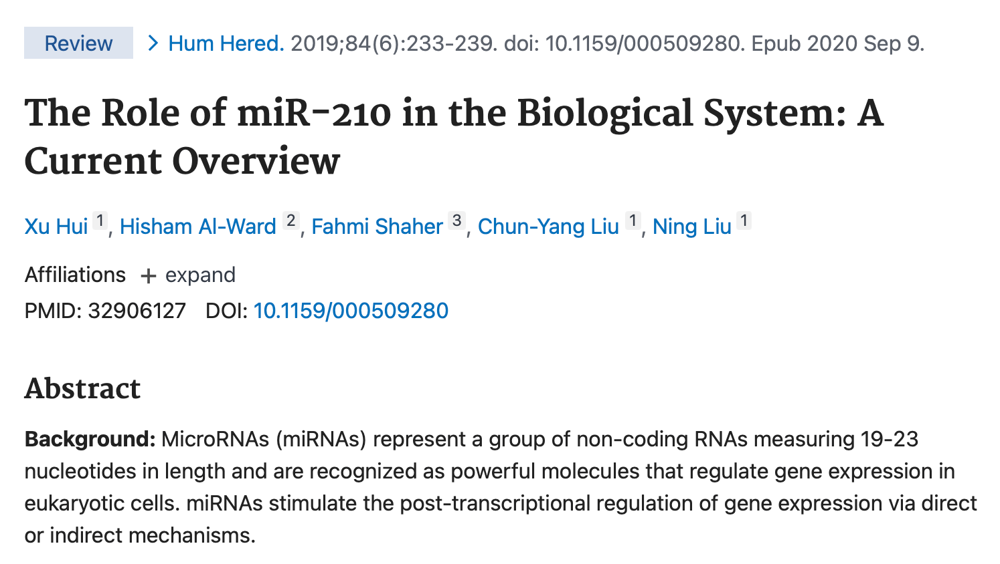
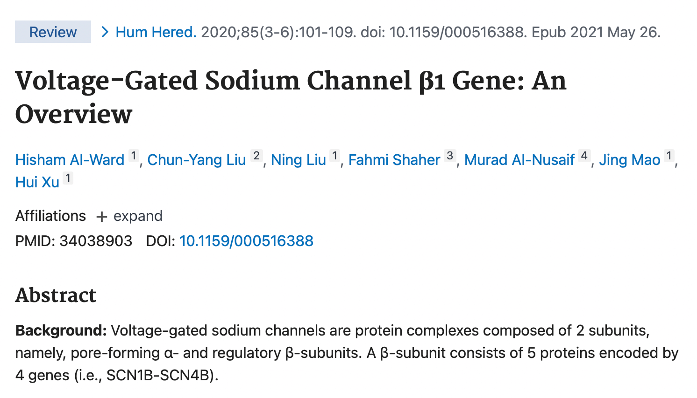
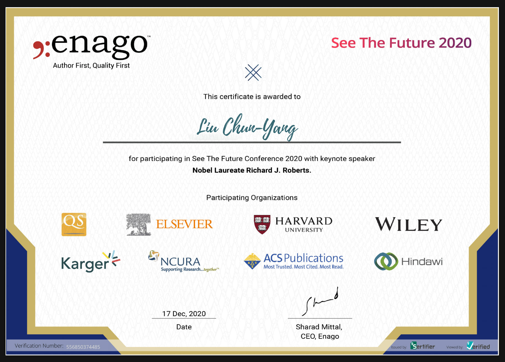

SAMPSON科研实验组
科研实验组聚焦MicroRNA与神经系统疾病、中药、生物信息学、动物模型等领域。实验组致力于交叉融合研究，推动本地区医学科研发展。
导师介绍
刘春阳
医学院实验中心副主任，研究方向为 MicroRNA在缺氧缺血性脑病（HIE）中的调控机制，聚焦离子通道、信号通路与神经系统疾病的分子基础。
谢娟平 教授 院长
院长，研究方向为 中药相关研究及疾病动物模型相关研究，在药食同源方向有深入探索，主持多项国家级及省级中药相关项目。
徐辉 教授 院长
博士研究生导师、博士后合作导师。
于子芮
研究聚焦于 miRNA-210与miRNA-373在新生儿缺氧缺血性脑病中的相关性，主持国家级大学生创新训练计划项目。
成员介绍
（此处可后续自行添加成员列表）
研究方向
- MicroRNA与神经系统疾病分子机制研究
- 医学生物信息学
- 血液蛋白脂类相关研究
- 中药相关研究
- 疾病动物模型相关研究
生物信息学研究
结合现代生物信息学工具，深入解析基因表达、调控网络与疾病的关系，为精准医学提供数据支持与算法基础。
MicroRNA分子机制研究
重点探索miRNA在缺氧缺血性脑病（HIE）中的调控机制，涉及信号通路、离子通道与蛋白质表达的调节作用。
成果展示
包括科研项目、论文发表、专利、获奖项目等成果。（详细成果列表建议用表格呈现，可后续添加）




学生竞赛获奖情况
| 姓名 | 项目名称 | 比赛名称 | 奖项等级 | 年份 |
|---|---|---|---|---|
| 张愉茸 | 多模态自适应护理体温环（MATC- Ring） | 全国青年科普创新实验暨作品大赛 | 省级三等奖 | 2025 |
| 李玥翮 | 粉碎过滤承重一体机：实验室的全能助手 | 全国青年科普创新实验暨作品大赛 | 省级三等奖 | 2025 |
| 刘文龙 | “艾”芯秦脉国内首款植物抑菌智能缓释穿戴装置革新者 | 全国青年科普创新实验暨作品大赛 | 省级三等奖 | 2025 |
| 刘文龙 | 秦岭艾草黄酮的提取工艺优化与抗菌产品开发研究 | 大学生创新训练计划项目 | 省级立项 | 2025 |
技术支持
欢迎联系实验组获取技术支持与合作信息。邮箱：SAMPSONLIU19940502@163.com
实验室照片
（可后续添加图片展示）
招生信息
（预留区域，待添加）